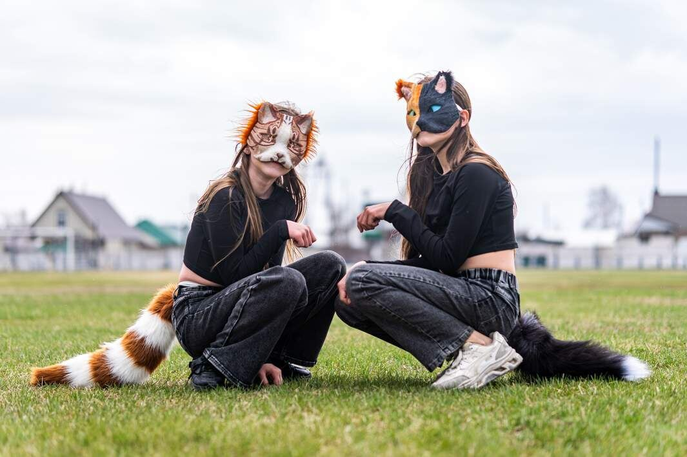

Квадробіка: Твій рух, твій стиль, твоя зграя
Набридли одноманітні тренування? Квадробіка — це про повну свободу. Тут ти сам вирішуєш, як рухатися, наскільки високим буде твій наступний стрибок і яким буде твій унікальний образ. Це мікс крутої акробатики, креативного крафту та вайбу справжньої свободи, де кожен рух робить тебе технічнішим та впевненішим у собі.
Ми тут не просто стрибаємо — ми створюємо ком'юніті, де цінують твій прогрес і твою індивідуальність. Прокачуй свої скіли, майструй маски, які збирають лайки, та знаходь своїх людей для спільних тренувань. Твій теріотип чекає на вихід!
Що на тебе чекає?
Прокачка скілів
Квадробіка — це інтенсивне навантаження на все тіло. Ми розбираємо техніку правильного «лендінгу», тренуємо високі стрибки та вчимося рухатися так само технічно, як професійні атлети. Це справжній спорт для тих, хто не боїться труднощів.
Креативний крафт
Твій образ — це твоя візитівка. У розділі майстерні ми ділимося досвідом створення реалістичних масок: від вибору основи до фінального розпису акрилом. Створюй спорядження, яке виділить тебе на будь-якій сходці.
Справжнє ком'юніті
Зграя — це підтримка та спільний драйв. Тут ти знайдеш однодумців зі свого міста, зможеш домовитися про спільне тренування у парку або просто почути пораду від досвідченіших учасників руху.
Коротко про головне:
- Безпека понад усе: Розминка кистей та правильна поверхня для стрибків — це база.
- Натхнення: Історії атлетів, які перетворили імітацію рухів тварин на справжнє мистецтво.
- Сходки: Інформація про те, як знайти активні групи у твоєму регіоні.
Готовий зробити перший крок?
Не поспішай одразу стрибати на асфальті. Переходь до розділу Правила та етика, щоб дізнатися, як почати свій шлях без травм та зайвих конфліктів.